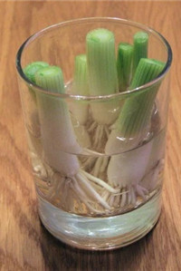
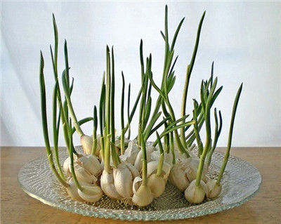
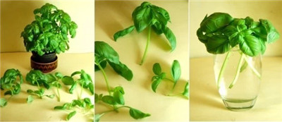
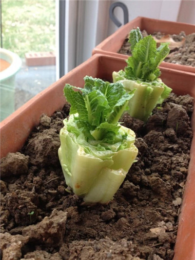

zhuhe
朱賀本紀
朱賀本紀
實錄
歲次丁酉年
二月廿二日
物價不斷上升〇菜價也不能倖免〇不如自己動手種植〇這八種蔬菜「包括白菜〇芹菜」不但可在家栽種〇而且能不斷反覆再種〇種得好的話〇以後就能自給自足〇除了省錢〇更重要的是健康呢
一「大蔥」
您可以留下一寸左右長〇附著根部的大蔥〇放置在一個盛有少許開水的小玻璃杯子中〇將杯子放在光線充足的房間〇大蔥便能長起來 
二「大蒜」
當大蒜開始發芽〇你可以把它們放在玻璃杯中加用少量水種植〇大蒜芽本身的味道較大蒜淡一點〇添加到沙拉〇意大利面等會有不錯的效果 
三「白菜」
將白菜根端浸在水中〇並放置在光線良好的地方〇大約一〇兩週內〇你就可以將它移植到土壤中〇讓它長出新的菜葉
四「紅蘿蔔」〖蘿蔔苗〗
把胡蘿蔔的頂部用少量水分養著〇放置在光線充足的窗台就可長出蘿蔔苗〇很適合用來加入沙拉中
五「羅勒」〖七錢插〇金不換〇九層塔〗
剪出三至四英寸長的連莖的羅勒〇放入一杯水中並將其置於陽光能直照的地方〇當根長到約二英寸長時〇就可換在花盆中種 
六「芹菜」〖西芹〗
切出芹菜底部〇將其放置在一個浸水的碟子或小碗中〇提供足夠的陽光〇當葉子開始在中間長出來〇就可將芹菜轉移到土壤中
七「生菜」
把生菜頭浸在1/2英寸的水中。每天灌水令水位保持大約二分之一英寸〇幾天後〇根和新葉就會長出〇到時就可移植入土壤中 
八「芫荽」〖芫茜〗
將芫荽莖部放入水中它便將會增長〇當根部長得足夠長度〇就可栽種在花盆中〇記著保持充足光線〇約一個後就能長出一棵完整的芫荽
Source: Healthy Body Now